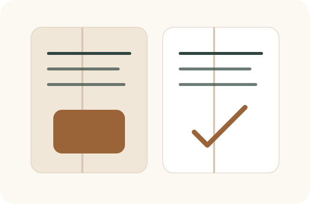

Step 1
資格の趣旨を理解する
まずは本資格の目的、対象者、施工管理資格との違いを理解し、 どのような実務領域を扱う資格なのかを確認します。
Program
本資格は現在、教科書と講習制度の整備を進めている段階です。 ここでは、初期運用を見据えた取得までの考え方と、今後の制度設計の方向性をご案内します。
Step
Step 1
まずは本資格の目的、対象者、施工管理資格との違いを理解し、 どのような実務領域を扱う資格なのかを確認します。
Step 2
実際の現場シーンをもとに、なぜその対応が必要か、 どのような心理や立場に配慮するかを学ぶ教材を想定しています。
Step 3
初期段階では、難解な試験制度よりも、 実務者が取り組みやすい講習中心の導線を優先して設計する予定です。
Step 4
制度が安定した段階で、実務事例の共有や継続研修を含む更新制度の整備を視野に入れています。
Textbook

職人同士の衝突、近隣対応、顧客説明など、現場で起こりやすい場面を軸に構成します。
表面的な会話例ではなく、なぜその声かけや判断が必要なのかまで言語化します。
専門理論に偏りすぎず、現場で振り返りやすい見開き単位の整理を意識します。
Lecture & Renewal
現時点では、資格名称だけが先行する制度ではなく、 実務での納得感が伴う運用を大切にしたいと考えています。 そのため初期は、わかりやすい講習導線と簡潔な認定設計を優先する見込みです。
一方で、資格の信頼性を保つためには継続的な学びの仕組みも重要です。 今後は、実務事例の共有や更新講習、活動報告などを含む制度設計を段階的に検討していきます。
Roadmap
現場シーンを整理し、資格の核となる教材を仕上げます。
取得しやすさと信頼性の両立を意識した、講習中心の導線を検討します。
更新制度、事例共有、認定者との接点づくりを段階的に構築します。